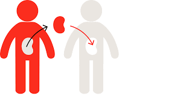

Organ donation is the process of Retrieving or Procuring an organ from a live or deceased person known as a DONOR. The process of recovering organs is called HARVESTING. This organ is transplanted into the RECEPIENT who is in need of that organ.
There are two types of organ donation – Live Donation & Deceased or Cadaver Donation.
Live Donation is from a healthy and living person. This can only be done in the case of a liver or a kidney (because the liver can grow back to its normal size, and a donor can survive on one kidney). So if a near relative of yours needs a liver or a kidney, anyone in the immediate family can donate to them.
When we talk about pledging your organs or about organ donation, we are talking about Deceased organ donation or cadaver organ donation. This is organ donation from a person who has been declared brain dead by a team of authorized doctors at a hospital. A person is said to be brain dead when there is an irreversible loss of consciousness, absence of brain stem reflexes and no spontaneous respiration.